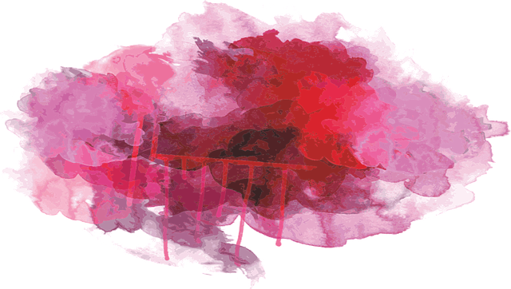
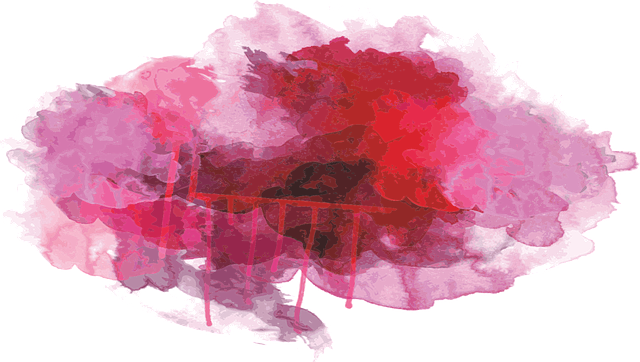

I'm Iyun
A Programmer!

A Programmer!

welcome to my blog. I am Iyun.
Riding a bike is a proven stress releaser. Regardless of if you are riding purely for pleasure or for a specific purpose, such as to become more mindful about life, you will arrive at your destination feeling relaxed,
energized and happier about the world and yourself.
Plus, being out on your bike is just flat-out fun. The more time you spend on two wheels, the harder it is to take yourself too seriously.
I like a funny guy, as a gilr/lady we're not expecting a comedian. However, we do expect you to keep it light-hearted and to make a few jokes now and then (even if those jokes aren't yours!)
A guy that smells good is
everything. Don't dose yourself in cologne, however. A little deodorant and soap goes a long way. Even the simple smell of your fresh laundry can be intoxicating.This feeling is amazing.
I am a Sapiosexual. Brainiacs are sexy! I like cute guys though, however, when I realize you're cute but not intelligent, that just a turn off for me. I mean I want more than just your body, money and looks